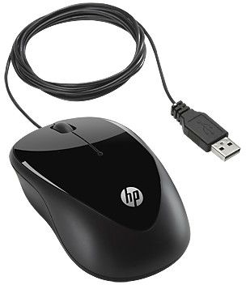

Mouse
A computer mouse is a hand-held pointing device that detects two-dimensional motion relative to a surface. This motion is typically translated into the motion of a pointer on a display, which allows a smooth control of the graphical user interface. The first public demonstration of a mouse controlling a computer system was in 1968. Originally wired to a computer, many modern mice are cordless, relying on short-range radio communication with the connected system. Mice originally used a ball rolling on a surface to detect motion, but modern mice often have optical sensors that have no moving parts. In addition to moving a cursor, computer mice have one or more buttons to allow operations such as selection of a menu item on a display. Mice often also feature other elements, such as touch surfaces and "wheels", which enable additional control and dimensional input.
Light Pen

A light pen is a computer input device in the form of a light-sensitive used in conjunction with a computer’s CRT TV set or monitor. It allows the used to paint to displayed objects, or draw on the screen, in a similar way to a touch screen but with greater positional accuracy. A light pen can work with any CRT-based display, but not with LCD screens projectors and other display devices. A light pen is fairly simple to implement. Just like a computer light gun, a light pen works by sensing the sudden small change in brightness of a point on the screen when the electro gun refreshes that spot.
Magnetic Ink Character Recognition(MICR)

Magnetic Ink Character Recognition, or MICR, is a character recognition technology used primarily by the banking industry to facilitate the processing of cheques. The technology allows computers to read information off printed documents. Unlike barcodes or similar technologies, however, MICR codes can be easily read by humans. MICR character are printed in special typefaces with a magnetic link or toner, usually containing iron oxide.